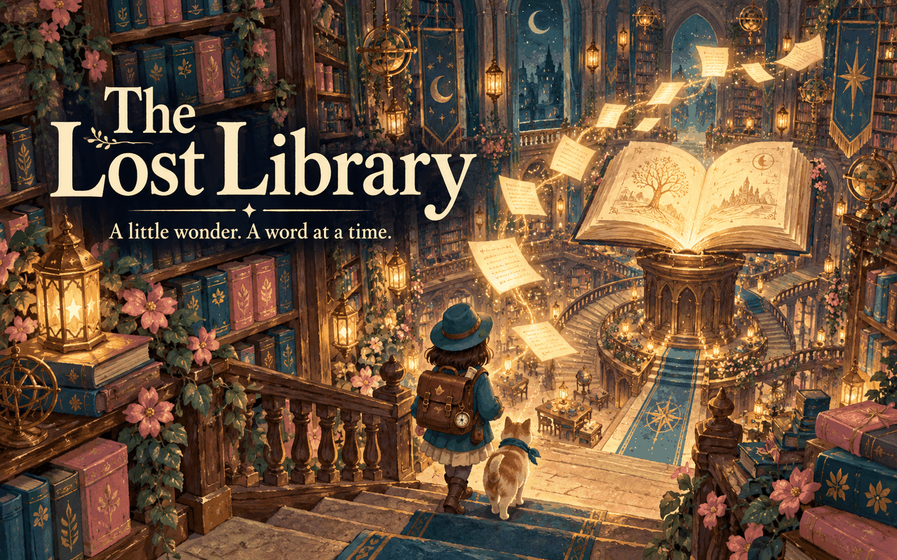

FIVE ROOMS. COUNTLESS LITTLE WONDERS.
A COZY WORD ADVENTUREThe Lost
The Lost
Library
A spell has scattered the library’s words. Follow the lantern light, solve curious puzzles, and bring its forgotten stories home.
✧ No timer♡ Room to wonder▤ Five lost pages
Progress stays in this browser. Your start.ng character comes with you.
CHAPTER 01 / 05
0 / 5 pages restored0 words found
Walk to a glowing object to inspect it.
Saved on this browser · Take your time. The stories will wait.